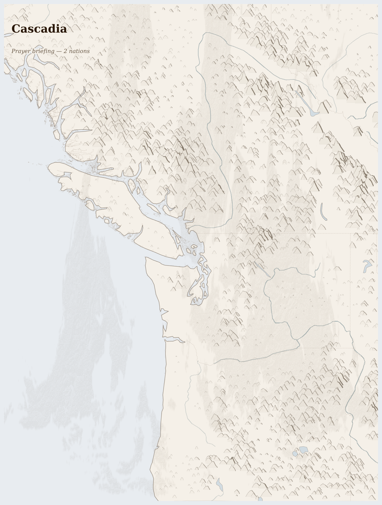

Cascadia18M people
ecology last verified 2 months ago
Lives Lived Here
Tribal nations (treaty fishing rights) and Commercial and recreational fishers — Spring chinook (Apr-Jun); sockeye (Jun-Aug); coho (Sep-Nov). But Dene, Athabascan, Chipewyan, and other Treaty 8 First Nations.
Bonneville Power Administration and Downstream irrigators and municipalities — Peak generation with spring melt (Apr-Jul); storage drawdown in summer.
Timber companies (Weyerhaeuser, private industrial) and Mill workers and logging communities — Year-round harvest; fire season halts operations. But Indigenous communities (pipeline routes through treaty lands).
Pacific Northwest urban populations during smoke seasons (Portland, Seattle, Vancouver — AQI routinely hazardous), Indigenous nations (Yakama, Confederated Tribes) managing fire-adapted landscapes with cultural burning and Agricultural communities in Willamette and Fraser valleys dependent on atmospheric river rainfall — Atmospheric river season Oct-Mar (delivering 30-50% of annual precipitation); fire smoke season Jul-Oct (expanding); marine fog summer. But Indigenous communities (pipeline routes through treaty lands).
Bonneville Power Administration and Downstream irrigators and municipalities — Peak generation with spring melt (Apr-Jul); storage drawdown in summer.

Reference map. Country boundaries and features are approximate.
What Presses
The weight on Cascadia
Shale oil and natural gas, corn, soybeans, and dairy products, bitumen crude oil (oil sands) leave the region — Indigenous communities (pipeline routes through treaty lands), Appalachian communities (water contamination, methane emissions), surrounding residents (air quality, health impacts).
Cascade Chains
Water scarcity — Water stress reduces agricultural productivity, leading to crop failures and food insecurity (USA)
Armed violence — Conflict displaces populations from affected areas (USA)
Resource extraction — Valuable mineral extraction attracts armed competition (CAN)
Who Sustains This
Bonneville Power Administration · Wholesale electricity sales from 31 federal Columbia River dams (Grand Coulee, Chief Joseph, John Day, The Dalles, Bonneville, McNary, Ice Harbor, Lower Granite + Lower Snake River dams + others); Transmission-tariff revenue across the 15,000-mile high-voltage Pacific Northwest grid; US Department of Energy regulatory framework + Northwest Power Act 1980 authorities; Long-term preference-customer contracts with public utility districts and tribal utilities
Driven by: We must deliver the carbon-free electricity the Pacific Northwest depends on
The trap: The federal dam complex is the source of the cheap, carbon-free electricity that anchors the regional economy's climate-leadership narrative — and the proximate driver of the Columbia salmon collapse that broke the treaty fishing economy of the Yakama, Umatilla, Warm Springs, and Nez Perce nations. The Lower Snake River dam-removal debate is structurally a debate about whether the climate framing can absorb the treaty-rights claim, or whether the treaty claim names a cost the climate framing has not been paying. Hatchery production answers the symptom while the structure remains the structure.
Microsoft Corporation, Pacific Northwest operations · Redmond Washington global headquarters and Puget Sound campus footprint; Quincy WA hyperscale data-centre cluster (operating since 2007, expanding 2023–); Eastern Washington and Boardman OR data-centre expansion; Long-term power-purchase agreements with BPA preference customers and merchant solar/wind
Driven by: We must become carbon negative by 2030 while delivering the AI platforms the world needs
The trap: Each new Azure region in central Washington draws on the same Columbia hydropower system whose dam-driven salmon collapse is the unhealed treaty wound of the bioregion; the carbon-negative pledge counts the electricity as clean and does not count the salmon. The water-consumption footprint of AI training that Microsoft is now beginning to disclose is structurally the same demand that ratepayer-funded BPA infrastructure was built to serve at industrial scale. The climate framing makes the data centre's hydropower demand virtuous; the treaty framing makes the same demand the latest installment of a settler-extraction history that did not pause for cloud computing.
LNG Canada Joint Venture (Shell-led) · Kitimat export terminal (Phase 1 commissioned 2024–2025, 14 Mtpa capacity; Phase 2 FID pending); Coastal GasLink pipeline (TC Energy operator) from Dawson Creek BC to Kitimat — 670 km; British Columbia LNG-tax incentive framework + federal export-permit; Long-term offtake to Asia-Pacific markets (Japan, Korea, China)
Driven by: We must deliver Canadian natural gas to Asian markets as a lower-carbon transition fuel
The trap: The 'transition fuel' framing converts the structural contradiction — that a major new fossil-export infrastructure is being built in 2024 against a 2050 net-zero national target — into a temporal arbitrage. The Wet'suwet'en hereditary-chief opposition to Coastal GasLink, sustained through years of RCMP enforcement actions at Unist'ot'en and Gidimt'en checkpoints, names a sovereignty question the elected-Band-Council consent the project relied on cannot answer. Each year LNG Canada operates exports decades of upstream methane the climate accounting nominally regrets but the contracts presuppose.
What leaves Cascadia: shale oil and natural gas, corn, soybeans, and dairy products, bitumen crude oil (oil sands). What returns is less certain. 7 killed (3 months); shale oil and natural gas, corn, soybeans, and dairy products, bitumen crude oil (oil sands) leaving; precipitation 39% of normal; 245 fires (7 days).
In Cascadia, the bitumen crude oil (oil sands) and corn, soybeans, and dairy products and shale oil and natural gas beneath the land sustain systems that profit from distance — between those who extract and those who bear the cost. But the land has survived before, and the people who tend it know rhythms older than any army. The land still provides, but the margin narrows with each season.
For Prayer
For communities enduring armed conflict between Bonneville Power Administration across Cascadia — 7 killed in the past three months. For protection of civilians and for those who have lost loved ones.
For United States, where multiple pressures are interacting and the situation is escalating. For those responsible for the response — that they act before lines are crossed that cannot be uncrossed.
For humanitarian workers and missionaries in Cascadia — for their safety, their courage, and their capacity to reach those most in need.
For every act of resistance and care in Cascadia — communities sharing food, farmers saving seed, neighbours sheltering neighbours. That these small acts of defiance outlast the crisis.
Clap your hands together, all you peoples; O sing to God with shouts of joy. For the Lord Most High is to be feared; he is the great king over all the earth.
Grant, we pray, almighty God, that as we believe your only-begotten Son our Lord Jesus Christ to have ascended into the heavens, so we may also in heart and mind thither ascend and with him continually dwell; who is alive and reigns with you, in the unity of the Holy Spirit, one God, now and for ever.
Amen.
Seeds of Hope
In Cascadia: Tribal nations (treaty fishing rights) continue to sustain salmon migration cycle; Bonneville Power Administration continue to sustain hydropower-navigation system; Timber companies (Weyerhaeuser, private industrial) continue to sustain timber economy.
For Reflection
What would it mean to accept this contradiction—that your comfort and their suffering exist in the same global system—rather than trying to resolve it from the outside?
How might sitting with this discomfort change how you pray?
Looking Ahead
- The data suggests: Rainfall deficit (-61% below normal) suggests continued water stress.
- These are indicators, not predictions.
- Cascades snowpack measurements April -- USDA SNOTEL data determines summer river flows for salmon; any deficit below 70% of normal signals lethal water temperatures by August
Carry This
What to bring with you from this briefing
Take Action
Organizations working at the nodes this briefing traces
Coalition advocating for the removal of the four lower Snake River dams (Ice Harbor, Lower Monumental, Little Goose, Lower Granite) — the only intervention that could recover Chinook salmon runs the dams have all but eliminated. Supported by NOAA Fisheries and tribal nations.
Directly addresses the central water network crisis the briefing describes — 90+ dams on the Columbia River have eliminated 90% of wild salmon runs, severing the marine nutrient cycle that carried ocean protein into old-growth forests. Dam removal is the single most consequential material intervention available.
Supports the Wet'suwet'en hereditary chiefs' assertion of title over 22,000 km2 of unceded territory in northern BC, where the Coastal GasLink pipeline is being built through headwaters that drain toward salmon rivers. Title was recognised by Canada's Supreme Court in Delgamuukw.
At the center of the pipeline-versus-treaty-rights conflict the briefing documents — fossil fuel infrastructure crossing Indigenous title lands without consent. The pipeline route crosses headwaters draining toward salmon rivers, connecting the carbon extraction network to the water network crisis.
Represents 20 treaty tribes in western Washington whose 1855 treaties guarantee the right to fish 'at all usual and accustomed grounds.' Publishes the State of Our Watersheds report documenting habitat conditions for treaty-protected salmon runs.
Represents the treaty rights the briefing centers — Coast Salish, Lummi, and Yakama peoples whose salmon runs have been reduced by 90% by dams built over tribal objections. The Commission is the institutional expression of the treaty fishing rights that remain legally binding but ecologically hollowed.
The Nez Perce Tribe has been among the most persistent advocates for removing the four lower Snake River dams, invoking their 1855 treaty rights to salmon. Their Department of Fisheries Resources manages salmon recovery programs across the Snake River basin.
The Nez Perce hold treaty rights to the Snake River salmon the briefing describes as nearly gone. Their advocacy connects the 1855 treaty promise to the present-day dam removal debate — the fish guaranteed by treaty cannot survive the infrastructure the US Army Corps of Engineers built over tribal objections.
Coalition of 15 Bristol Bay tribal governments that helped stop the Pebble Mine — a proposed open-pit copper and gold mine that would have destroyed the world's largest remaining sockeye salmon run. The EPA vetoed the mine in 2023 using Clean Water Act authority.
Represents the successful resistance the briefing documents — Bristol Bay's 50 million annual sockeye salmon were protected when the EPA vetoed Pebble Mine, a rare use of regulatory authority to prioritize an intact salmon ecosystem over mineral extraction. The counter-model to the Columbia River's loss.
Where this comes from (9 sources)
Tier 1 = UN agencies & peer-reviewed · Tier 2 = community voice & justice orgs · Tier 3 = corporate / unverified (require 2+ independent sources)
- NOAA Fisheries, Pacific Salmon Recovery Plans, 2024. https://www.fisheries.noaa.gov
- US Forest Service, Pacific Northwest Forest Inventory and Analysis, 2024. https://www.fs.usda.gov T1
- Wilkinson, C.F., Blood Struggle: The Rise of Modern Indian Nations, W.W. Norton, 2005
- EPA, Puget Sound Recovery Plan, 2024. https://www.epa.gov/puget-sound
- Global Forest Watch, Pacific Northwest Tree Cover, 2024. https://www.globalforestwatch.org T1
- Hessburg, P.F. et al., Climate, Environment, and Disturbance History Govern Resilience of Western North American Forests, Frontiers in Ecology and Evolution 9, 2021. https://doi.org/10.3389/fevo.2021.576895
- Columbia Basin Fish and Wildlife Authority, Fish Passage Center Annual Report, 2024
- Northwest Indian Fisheries Commission, State of Our Watersheds Report, 2024. https://nwifc.org
- BC Ministry of Forests, Provincial Wildfire Summary, 2024. https://www2.gov.bc.ca/gov/content/safety/wildfire-status
Generated 2026-05-14